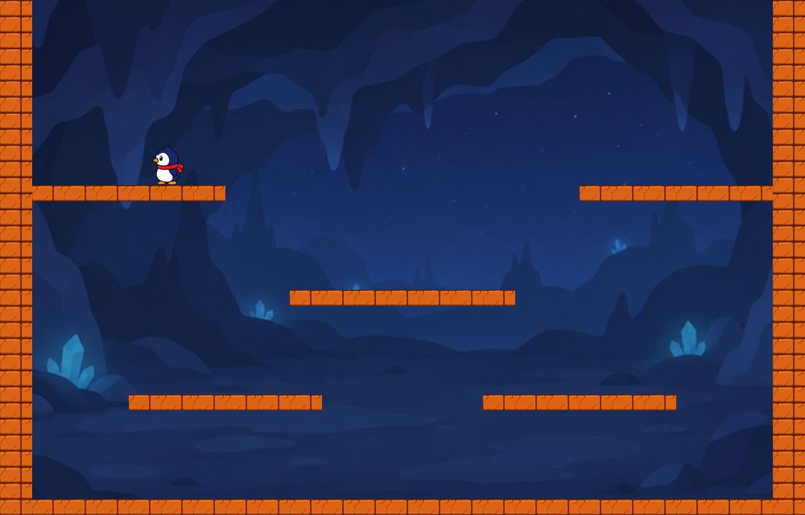
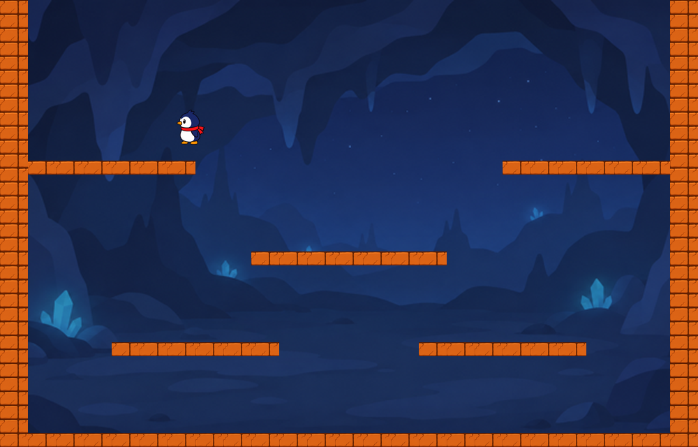

7장. 점프
6장에서는 펭귄이 중력으로 떨어지다가 발판 위에 서도록 만들었습니다. 이번 장에서는 위 화살표 키로 점프하게 합니다. 위로 향하는 속도를 주면 지난 장의 중력 코드가 펭귄을 올라갔다 내려오게 합니다.
장을 마치면 가운데 발판에서 왼쪽으로 뛰어 위쪽 발판에 올라설 수 있습니다. 올라갈 때는 발판을 통과하고, 내려올 때는 발판 윗면에 착지합니다.

7-1 위 화살표로 점프하기
위로 향하는 속도 주기
Swing 화면에서는 아래로 갈수록 y가 커집니다. 따라서 세로 속도인 dy가 양수이면 아래로, 음수이면 위로 움직입니다. 점프를 시작할 때 dy에 음수를 넣으면 펭귄이 위로 올라갑니다.
올라가는 동안에도 중력은 계속 작용합니다. 게임 루프가 fall()을 호출할 때마다 dy에 GRAVITY가 더해집니다. 음수였던 속도는 점차 0에 가까워지고, 양수로 바뀌면 펭귄이 내려옵니다. 올라가는 코드와 내려오는 코드를 따로 만들 필요가 없습니다.
다만 공중에서도 점프를 허용하면 위 화살표를 누를 때마다 다시 솟아오릅니다. 발판에 서 있는지를 기억하고, 서 있을 때만 점프를 시작하도록 제한합니다.
점프 메서드와 키 입력 연결하기
src/bubble/game/Player.java에 점프 속도와 착지 상태를 추가합니다. 이어서 jump()를 만들고, fall()에서 착지 상태를 갱신합니다.
src/bubble/game/BubbleFrame.java에서는 기존 키 리스너에 위 화살표 입력을 추가합니다. 왼쪽과 오른쪽 키를 연결했던 switch에 점프 호출을 넣습니다.
수정 파일: src/bubble/game/Player.java, src/bubble/game/BubbleFrame.java
private static final int SPEED = 4; private static final int GRAVITY = 1; private static final int JUMP = -18; private int x; private int y; private int dy; private boolean onGround; @Setter private boolean left; @Setter⋯ setLocation(x, y); } public void jump() { if (onGround) { dy = JUMP; } } public void fall(List<Rectangle> floors) { int bottom = y + 50; dy += GRAVITY; y += dy; onGround = false; for (Rectangle floor : floors) { boolean above = bottom <= floor.y && y + 50 >= floor.y; boolean across = x + 50 > floor.x && x < floor.x + floor.width; if (above && across) { y = floor.y - 50; dy = 0; onGround = true; } } setLocation(x, y); switch (e.getKeyCode()) { case KeyEvent.VK_LEFT -> player.setLeft(true); case KeyEvent.VK_RIGHT -> player.setRight(true); case KeyEvent.VK_UP -> player.jump(); } }발판에 서 있을 때 점프 시작하기
JUMP는 점프를 시작할 때 사용할 세로 속도입니다. 값이 -18이므로 dy = JUMP를 실행하면 위로 향하는 속도가 생깁니다. jump()는 위치를 직접 바꾸지 않습니다. 실제 위치 변경은 기존 게임 루프에서 호출하는 fall()이 맡습니다.
onGround는 바닥이나 발판에 서 있는지를 기억합니다. jump()는 onGround가 true일 때만 dy에 JUMP를 넣습니다. 공중에서 onGround가 false이면 위 화살표를 눌러도 속도를 바꾸지 않습니다.
BubbleFrame에 추가한 KeyEvent.VK_UP은 위 화살표 키를 뜻합니다. 이 키를 누르면 player.jump()를 호출합니다. 좌우 이동은 키를 누르는 상태를 기억하지만, 점프는 키 입력이 들어왔을 때 시작 속도를 지정합니다.
매번 착지 상태를 다시 판단하기
fall()에 추가한 onGround = false는 착지 여부를 검사하기 전에 실행됩니다. 직전에 발판에 서 있었더라도, 이번 이동에서도 발판 위에 있는지는 다시 확인해야 합니다.
펭귄이 발판 끝을 걸어 나가면 더는 발판과 가로로 겹치지 않습니다. 이때는 착지 조건을 만족하지 않으므로 onGround가 false로 남습니다. 이전의 착지 상태를 그대로 두면 발판 밖에서도 점프가 가능해집니다.
착지 조건을 만족하면 펭귄의 위치를 발판 윗면에 맞추고 dy를 0으로 만듭니다. 이때 onGround = true도 실행해 다음 점프를 허용합니다.
발판 위에 가만히 서 있어도 착지 여부는 계속 확인합니다. 중력 때문에 조금 내려가려는 순간 착지 조건이 다시 성립합니다. 위치는 발판 위로 돌아오고, onGround도 다시 true가 됩니다.
중력이 상승을 낙하로 바꾸기
점프 직후 dy는 -18입니다. 다음 fall()에서는 먼저 중력 1을 더하므로 dy가 -17이 됩니다. 이어서 y += dy가 실행되어 펭귄이 위로 17픽셀 이동합니다.
그다음 호출에서는 dy가 -16이 됩니다. 위로 이동하는 거리가 조금씩 줄다가 dy가 0이면 세로 위치가 바뀌지 않습니다. 이후 dy가 양수가 되면서 아래로 떨어집니다.
위 화살표를 누르면 jump()를 호출해 발판에 서 있는지 확인합니다. 점프가 시작되면 fall()이 위치와 속도를 계속 바꿉니다. 내려오다가 발판에 닿으면 속도가 0이 되고 다시 점프할 수 있는 상태가 됩니다.
발판 아래에서는 통과하고 위에서는 서기
이번에는 발판 충돌 조건을 바꾸지 않았습니다. 지난 장의 above와 across 조건이 점프에도 그대로 쓰입니다.
above는 이동 전 발의 좌표가 발판 윗면의 좌표보다 작거나 같은지 확인합니다. 이동 후에는 발이 그 윗면에 닿거나 아래로 지나갔는지도 확인합니다. 여기서 bottom은 이동 전 발의 좌표이고, y + 50은 이동 후 발의 좌표입니다.
아래에서 위로 올라갈 때는 이동 후 발의 좌표가 더 작아집니다. 따라서 발이 발판 윗면을 아래로 지나는 착지 조건이 성립하지 않습니다. 펭귄은 발판 아래에서 막히지 않고 통과합니다.
발판보다 높이 올라간 뒤 내려오면 상황이 달라집니다. 발이 발판 윗면을 아래로 지나고, across도 참이면 발판 위에 섭니다. 이 방식에서는 발판 윗면만으로 착지를 판단합니다.
왼쪽 위 발판으로 뛰기
파일을 저장한 뒤 BubbleFrame을 Run As → Java Application으로 실행합니다. 방향키를 누르지 않고 기다리면 펭귄이 왼쪽 위 발판에 착지합니다. 게임 창에 포커스를 두고 위 화살표를 짧게 눌렀다 뗍니다. 펭귄이 올라간 뒤 내려와 출발한 발판에 다시 서야 합니다.
바닥에서부터 발판을 올라가는 동작도 확인합니다. 먼저 오른쪽으로 걸어 왼쪽 위 발판을 벗어납니다. 펭귄의 왼쪽 끝이 아래 왼쪽 발판의 가운데쯤인 x = 300 부근에 오면 오른쪽 키를 뗍니다. 이 위치에서는 가운데 발판과 겹치지 않으므로 아래 왼쪽 발판까지 떨어집니다. 착지한 뒤 왼쪽으로 걸어 아래 왼쪽 발판도 벗어납니다. 펭귄 전체가 발판 왼쪽 끝을 지나면 키를 떼고 바닥에 착지할 때까지 기다립니다.
바닥에서 오른쪽으로 이동해 아래 왼쪽 발판 바로 아래에 섭니다. x = 200 부근에서 좌우 키를 떼고 위 화살표를 짧게 눌렀다 뗍니다. 아래 왼쪽 발판을 통과해 올라갔다가 그 위에 착지합니다. 이어서 발판 위를 오른쪽으로 걸어 x = 360 부근에 섭니다. 좌우 키를 떼고 다시 점프하면 가운데 발판에 올라설 수 있습니다.
가운데 발판에 착지한 뒤 왼쪽 화살표를 누르면서 위 화살표를 짧게 눌렀다 뗍니다. 펭귄이 왼쪽으로 이동하며 위쪽 발판을 통과해 올라갑니다.
실행 결과
펭귄이 왼쪽 위 발판보다 높이 떠오릅니다.

펭귄이 위쪽 발판과 가로로 겹치는 위치에 오면 왼쪽 화살표를 뗍니다. 잠시 뒤 펭귄이 내려와 발판 위에 섭니다. 계속 왼쪽으로 이동하면 발판을 지나칠 수 있으므로, 착지할 자리에 맞춰 좌우 이동을 멈춥니다.
공중에서 위 화살표를 다시 눌러도 점프가 새로 시작되지 않는지 확인합니다. 발판에 착지한 뒤에는 다시 점프할 수 있어야 합니다.
7장 완성 코드 보관하기
왼쪽 위 발판에 올라서는 동작까지 확인했다면, 앞 장과 같은 방법으로 src/bubble/game의 완성 코드를 ex07에 복사합니다. 다음 장에서는 src/bubble/game의 코드에 물방울을 쏘는 기능을 이어 붙입니다.